硬盘分区备忘（主分区，扩展分区和逻辑分区）以及Linux硬盘分区工具parted 介绍
我们知道硬盘的第一个扇区也就是第0扇区是用来存放主引导记录(MBR)的，因此也称MBR扇区。一个扇区是512字节，因此MBR的大小也是512字节，其具体数据结构是：446个字节的引导代码、64个字节的分区表及2个字节的签名值"55AA"。由于MBR的分区表只有64个字节，这决定了它只能存储4个分区记录。这就是为什么一块硬盘最多只能有4个“主分区"的原因。记住，“主分区”就是指记录在主引导记录MBR分区表中的分区，除此之外主分区并无特别之处，但是过去的一些老操作系统往往不能安装在主分区之外的分区上，所以，主分区也贴上“专门用来安装操作系统”的标签。
我们已经知道了MBR中的分表区只能存放4个分区（即4个主分区），那系统是如何划分出4个以上的分区的呢？一种直白而简单的思路就是把其中一个主分区再进行细分，衍生出一个二级分区表。对的，这个被用来二次分区的主分区就是“扩展分区”，它下面的二级分区就是“逻辑分区”。
关于如何在 Linux 下如何使用parted工具时行分区,这里转载一篇文章, 讲解的非常清晰. 原文出处:http://dngood.blog.51cto.com/446195/647702/
一 关键词
MBR和2TB的限制
在使用fdisk建立分区时，我们最大只能建立2TB大小的分区，如果你的磁盘(阵列)大于2TB，只能通过划分多个分区的方法才能充分利用磁盘容量，这对于使用小于2TB分区的朋友没啥影响，但对于使用大于2TB分区(比如5TB的分区)的朋友就会遇到问题了，要突破这个限制；我们先来了解下MBR(Master Boot Record)和GPT(GUID Partition Table).
MBR
主引导记录（Master Boot Record，缩写：MBR），又叫做主引导扇区，是计算机开机后访问硬盘时所必须要读取的首个扇区，它在硬盘上的三维地址为（柱面，磁头，扇区）＝（0，0，1）。
MBR是由分区程序（如Fdisk，Parted）所产生的，它不依赖任何操作系统，而且硬盘引导程序也是可以改变的，从而能够实现多系统引导。
从主引导记录的结构可以知道，它仅仅包含一个64个字节的硬盘分区表。由于每个分区信息需要16个字节，所以对于采用MBR型分区结构的硬盘(其磁盘卷标类型为MS-DOS)，最多只能识别4个主要分区。所以对于一个采用此种分区结构的硬盘来说，想要得到4个以上的主要分区是不可能的。这里就需要引出扩展分区了。扩展分区也是主分区（Primary partition）的一种，但它与主分区的不同在于理论上可以划分为无数个逻辑分区，每一个逻辑分区都有一个和MBR结构类似的扩展引导记录(EBR)。
在MBR分区表中最多4个主分区或者3个主分区＋1个扩展分区，也就是说扩展分区只能有一个，然后可以再细分为多个逻辑分区。
在Linux系统中，硬盘分区命名为sda1－sda4或者hda1－hda4（其中a表示硬盘编号可能是a、b、c等等）。在MBR硬盘中，分区号1－4是主分区（或者扩展分区），逻辑分区号只能从5开始。
在MBR分区表中，一个分区最大的容量为2T，且每个分区的起始柱面必须在这个disk的前2T内。你有一个3T的硬盘，根据要求你至少要把它划分为2个分区，且最后一个分区的起始扇区要位于硬盘的前2T空间内。如果硬盘太大则必须改用GPT。
GPT
全局唯一标识分区表（GUID Partition Table，缩写：GPT）是一个实体硬盘的分区结构。它是EFI(可扩展固件接口标准)的一部分，用来替代BIOS中的主引导记录分区表。但因为MBR分区表不支持容量大于2.2TB（2.2 × 1012字节）的分区，所以也有一些BIOS系统为了支持大容量硬盘而用GPT分区表取代MBR分区表。
在MBR硬盘中，分区信息直接存储于主引导记录(MBR)中（主引导记录中还存储着系统的引导程序）。但在GPT硬盘中，分区表的位置信息储存在GPT头中。但出于兼容性考虑，硬盘的第一个扇区仍然用作MBR，之后才是GPT头。
与支持最大卷为2 TB（Terabytes）并且每个磁盘最多有4个主分区（或3个主分区，1个扩展分区和无限制的逻辑驱动器）的MBR磁盘分区的样式相比，GPT磁盘分区样式支持最大卷为18 EB（Exabytes）并且每磁盘的分区数没有上限，只受到操作系统限制（由于分区表本身需要占用一定空间，最初规划硬盘分区时，留给分区表的空间决定了最多可以有多少个分区，IA-64版Windows限制最多有128个分区，这也是EFI标准规定的分区表的最小尺寸）。与MBR分区的磁盘不同，至关重要的平台操作数据位于分区，而不是位于非分区或隐藏扇区。另外，GPT分区磁盘有备份分区表来提高分区数据结构的完整性。
EFI
可扩展固件接口（英文名Extensible Firmware Interface 或EFI）是一种个人电脑系统规格，用来定义操作系统与系统韧体之间的软件界面，为替代BIOS的升级方案。可扩展固件接口负责加电自检（POST）、连系操作系统以及提供连接操作系统与硬件的接口。
EFI最初由英特尔开发，现时由UEFI论坛来推广与发展。
UEFI
是由EFI1.10为基础发展起来的，它的所有者已不再是Intel，而是一个称作Unified EFI Form的国际组织，贡献者有Intel，Microsoft，AMI，等几个大厂，属于open source，目前版本为2.1。
二 使用fdisk创建分区（小于2TB）
如果我们要创建的分区不会超过2TB，我们可以使用传统分区工具fdisk，让我们以某机器为例，展示一下它的用法：
- 使用 fdisk -l 命令查看机器上安装的硬盘信息
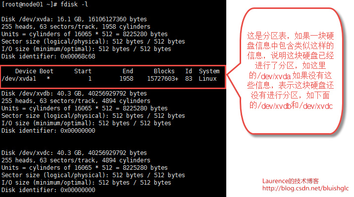
上面的信息告诉我们这台机器拥有3块硬盘，其中只有第一块硬盘进行了分区，剩余的两块尚未分区。
2，使用fdisk对某个硬盘进行分区
这里我们展示的是对硬盘/dev/xvdc的分区操作，首先键入“fdisk /dev/xvdc”进入分区的向导模式：
输入n，表示要建立一个新的分区
输入p, 表示我们想要创建一个主分区
直接回车，使用默认的起始柱面，也就是柱面1
直接回车，使用默认的截止柱面，也就是柱面4894， 也就是说对于这块硬盘，我们就建立一个分区，大小是整个磁盘。
输入w, 保存分区表并退出
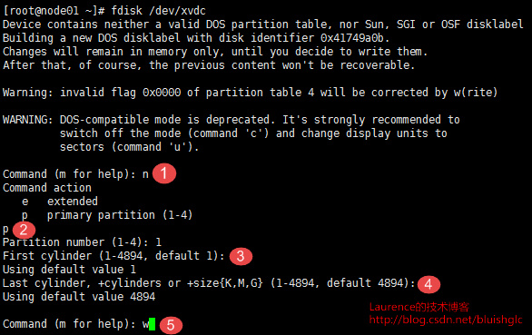
- 格式化新创建的分区
是的，最后一步都是一样的，对新建的分区进行格式化，这里我们选择ext4文件系统。
mkfs.ext4 /dev/xvdc1
如果使用xfs文件系统，使用命令：
mkfs.xfs /dev/xvdc1
注意：格式化时指定的是“分区”而不是硬盘！这里的xvdc1显然是硬盘xvdc的第一个分区，如果错写成xvdc就意味着要格式化整个硬盘
三 创建一个大于2TB的分区
MBR 与 GPT,都是分区格式,其中MBR最大分区小于等于2TB,而GPT分区没有2TB的限制，理论最大分区18 EB！
现在我们知道了要创建一个大于2TB的分区，就不能使用MBR 格式的分区表了，而要使用GPT格式的分区表，我们最常用的fdisk 分区工具就爱莫能助了，需要使用linux 下的Parted分区工具!
测试环境为：
Dell R710 2u 服务器
cpu 2* XEON 5606
mem 16G
disk 6*1TB sas 7200rpm
raid raid level 5 perc 6i卡
rhel 6 64bit ,创建一个4TB大小分区
下面正式开始分区：
1 在使用parted 分区之前，我们先用fdisk -l 来查看下硬盘信息！
[
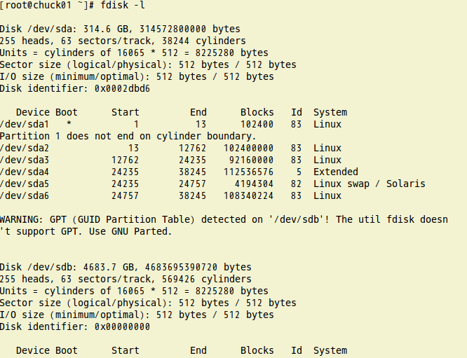
](https://i-blog.csdnimg.cn/blog_migrate/b04c566f5949f225172fd2dd9a610a49.png)
2 上边的信息我们知道 /dev/sdb 4.6TB，现在使用parted 命令，如下图。
[
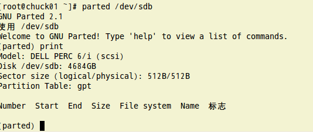
](https://i-blog.csdnimg.cn/blog_migrate/7c8a1d78dc028cde2a9723832d49e591.png)
3 进入parted 后，执行2,3,4,5,6,7,8,9,10,10,11步骤,指令下边有解释！
[
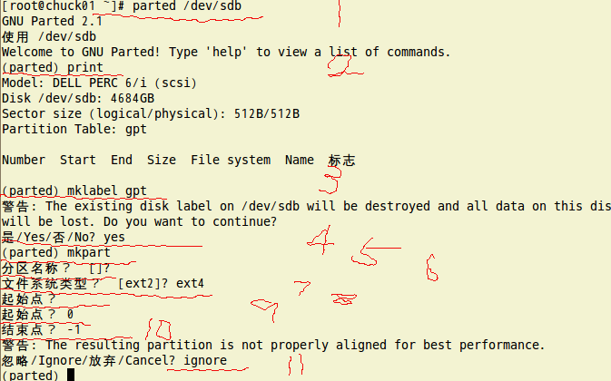
](https://i-blog.csdnimg.cn/blog_migrate/19f5567c8b0ee60d93894720a56ae64c.png)
4 分区完成后使用print 可以看到刚才分区的信息！大小 4684GB
[
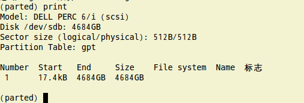
](https://i-blog.csdnimg.cn/blog_migrate/78c93cfac6931150a7764626cfdd3d71.png)
５ quit 用于退出parted环境，信息提示更新/etx/fstab！
[
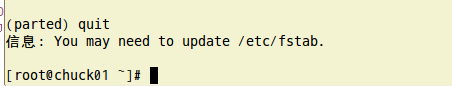
](https://i-blog.csdnimg.cn/blog_migrate/3934bce4df666550139751bba23dc64b.png)
6 再用fdisk -l 来查看下 sdb硬盘,现在已经有sdb1 分区了，注意system gpt!
[
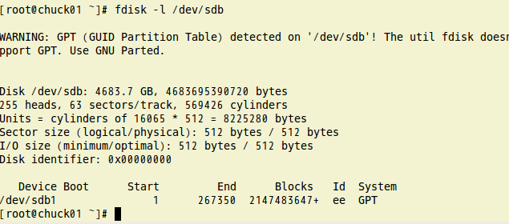
](https://i-blog.csdnimg.cn/blog_migrate/477cc44cf6938b27301926cfecc1c09c.png)
7 parted 到这里就完成了！
下面格式化/dev/sdb1 文件系统为EXT4：
1 执行 mkfs.ext4 /dev/sdb1 一路回车即可！
[
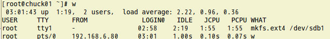
](https://i-blog.csdnimg.cn/blog_migrate/5e970dbacbc257208e7511b5fac953bc.png)
更新/etc/fstab ：
1.使用blkid 查看分区的uu id 如下图,复制新分区/dev/sdb1的 UUID
[
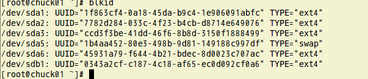
](https://i-blog.csdnimg.cn/blog_migrate/dd6645b7b89c8a9c5953b3de209e6671.png)
2 将 /dev/sdb1的 UUID 添加到 /etc/fstab,/dev/sdb1 挂载在 /data 目录下！
[
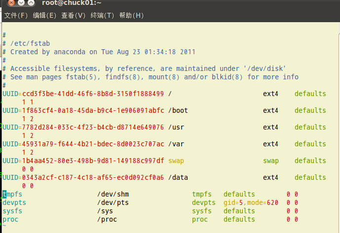
](https://i-blog.csdnimg.cn/blog_migrate/866a83e0097cd0289764b0b530118e23.png)
3 至此全部完成, 下面检查一下！
mount -a 重新挂载 /etc/fstab 文件中的记录！
mount 可以发现 /dev/sdb1 已经挂载到 /data 目录下了！
df -h 发现 /data 4.2TB
[
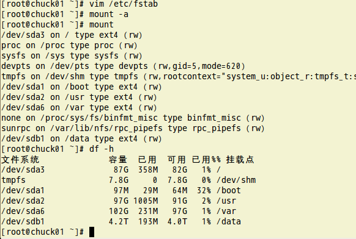
](https://i-blog.csdnimg.cn/blog_migrate/e8aa0409d8c972e0fd29892deaad1e38.png)
三 详细介绍下Parted命令
[root@abintel ~]# parted --help
用法：parted [选项]… [设备 [命令 [参数]…]…]
将带有“参数”的命令应用于“设备”。如果没有给出“命令”，则以交互模式运行。
选项：
-h, --help 显示此求助信息
-i, --interactive 在必要时，提示用户
-s, --script 从不提示用户
-v, --version 显示版本
命令：
检查 MINOR 对文件系统进行一个简单的检查
cp [FROM-DEVICE] FROM-MINOR TO-MINOR 将文件系统复制到另一个分区
help [ COMMAND ] 打印通用求助信息，或关于 COMMAND 的信息
mklabel 标签类型 创建新的磁盘标签 (分区表)
mkfs MINOR 文件系统类型 在 MINOR 创建类型为“文件系统类型”的文件系统
mkpart 分区类型 [文件系统类型] 起始点 终止点 创建一个分区
mkpartfs 分区类型 文件系统类型 起始点 终止点 创建一个带有文件系统的分区
move MINOR 起始点 终止点 移动编号为 MINOR 的分区
name MINOR 名称 将编号为 MINOR 的分区命名为“名称”
print [MINOR] 打印分区表，或者分区
quit 退出程序
rescue 起始点 终止点 挽救临近“起始点”、“终止点”的遗失的分区
resize MINOR 起始点 终止点 改变位于编号为 MINOR 的分区中文件系统的大小
rm MINOR 删除编号为 MINOR 的分区
select 设备 选择要编辑的设备
set MINOR 标志 状态 改变编号为 MINOR 的分区的标志
注意
mklabel label-type 必须是一下这些类型：
-
bsd
-
loop (raw disk access)
-
gpt
-
mac
-
msdos
-
pc98
-
sun
例：(parted) mklabel gtp 或者 (parted) mklabel msdos
mkpart（建立新分区）
格式：mkpart part-type fs-type start end
建立一个新的分区
part-type是以下类型之一 primary（主分区）, extended（扩展分区）, logical（逻辑分区）。
fs-type来指定文件系统，比如ext4 。
start和end是新分区开始和结束的具体位置。0表示起止，-1表示结尾；或者以mb表示或者GB表示！
硬盘分区备忘（主分区，扩展分区和逻辑分区）以及Linux硬盘分区工具parted 介绍
https://laurence.enlightgram.com/linux/disk-partitions-and-parted/